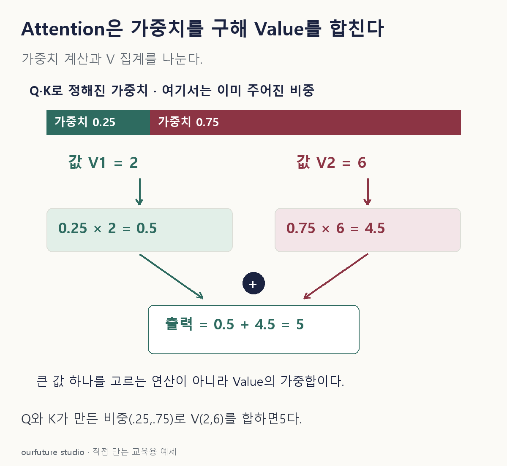

핵심 이론
어텐션은 Query와 Key의 적합도로 가중치를 만들고 그 가중치로 Value를 합친다. Query는 지금 정보를 찾는 위치의 벡터, Key는 비교할 각 후보의 벡터, Value는 그 후보에서 실제로 모을 내용 벡터다. 원형 Transformer의 scaled dot-product attention은 QKᵀ를 √dₖ로 나눈 점수에 softmax를 적용한 뒤 V를 곱한다. dₖ는 Query와 Key의 성분 수다. softmax는 각 점수sᵢ의 exp(sᵢ)를 모든 후보의 exp(s) 합으로 나누므로 한 Query의 가중치 합이1이 된다. 점수가 가장 큰 Value 하나만 선택하는 연산과 다르다.
가중치가 0.25와 0.75, Value가 2와 6이면 출력은 0.25×2+0.75×6=5다. Query와 Key는 여기서 비중을 만드는 역할이고 값 2와 6이 집계 대상이다. 한 어텐션 가중치를 곧바로 어떤 입력의 인과적 중요성이나 설명의 정답이라고 단정할 수는 없다.
원형 Transformer는 순환 계산 없이 어텐션을 사용하므로 위치 정보를 별도로 더한다. 디코더의 마스킹은 현재 위치가 허용되지 않은 미래 출력에 접근하지 못하게 한다. 모든 현대 변형의 위치 표현이나 구조가 원형과 같지는 않다. 아래 문항은 이미 정해진 가중치의 합산만 물으며 QK에서 가중치를 추정하는 문제는 아니다.
작은 예제로 확인하기
한 Query에 대한 softmax 가중치가 (0.25,0.75), 스칼라 Value가 (2,6)이라고 하자.
| 항 | 가중치×Value |
|---|---|
| 1 | 0.25×2=0.5 |
| 2 | 0.75×6=4.5 |
| 합 | 5 |
Value의 단순 평균은 4지만 이 예제의 가중치는 같지 않으므로 출력이 5가 된다.
그림으로 확인하기

직접 고르기
Attention 가중치 (0.25,0.75), Value (2,6). 출력은 Value의 가중합이다.
출력값은?
- 1. 2
- 2. 4
- 3. 6
- 4. 5
정답과 오답의 이유 확인하기
정답 4번 — 5
0.25×2+0.75×6=0.5+4.5=5다.
- 1번: 첫 Value만 선택했다.
- 2번: 가중치를 무시하고 단순 평균을 냈다.
- 3번: 가장 큰 가중치의 Value만 선택했다.
조건 하나 바꾸어 풀기
같은 Value에 가중치가 (0.5,0.5)로 바뀌면 출력은?
풀이: 4.
0.5×2+0.5×6=4다. 집계 대상은 같고 비중만 변했다.
다시 떠올릴 단서
Q와 K로 비중, V를 가중합.
근거와 적용 조건
- Vaswani et al., Attention Is All You Need — 3.2.1 scaled dot-product attention, 3.5 positional encoding 및 decoder masking. 확인일 2026-10-30.
상황·수치·보기·조건 변경은 자체 교육 예제다. 민간 복원 문항의 공식 정답이나 실제 성능·학습 효과를 뜻하지 않는다.
읽은 내용을 적용해 보기
정규화된 비음수 가중치를 직접 입력한다. 유한 softmax의 정확한0/1은 극한 경계로 이해한다.